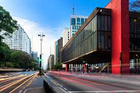
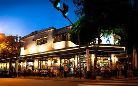
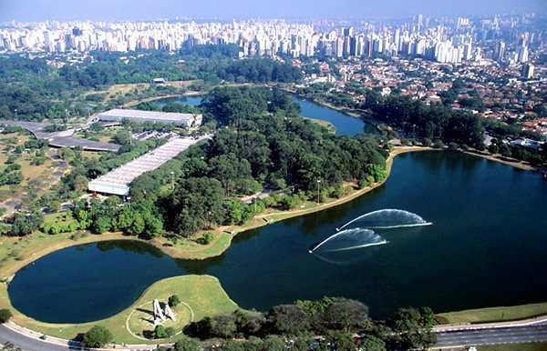

Passear na Avenida Paulista
UM dos principais centros financeiros da cidade, a avenida Paulista também possui diversas opcções de entretenimento. Endereço do Museu de Artes de São Paulo, do Teatro Gazeta e muitos outros, a região é de fácil acesso graças as diversas linhas de ônibus que cruzam a avenida e a linha de metrô que passa por de baixo dela.
Os Bares da Vila Madalena
Depois de um dia de trabalho, ndaa melhor do que um bom chopp, um petísco e conversa em uma mesa de bar. opções de sobra na região das ruas As picuelta, Fradique Coutinho e Wisad.
O Parque do Ibirapuera
Um dos cartões postais da cidade, o parque dispõe de mais de 1,5km² de área verde, lagos artificiais e pistas de cooper e ciclismo. E se isso não fosse o suficiente, o parque costuma ser palco de diversos eventos sulturais ao longo do ano.